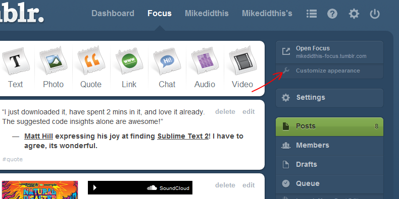
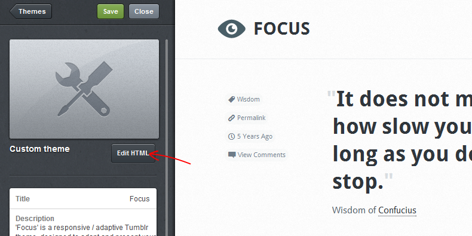
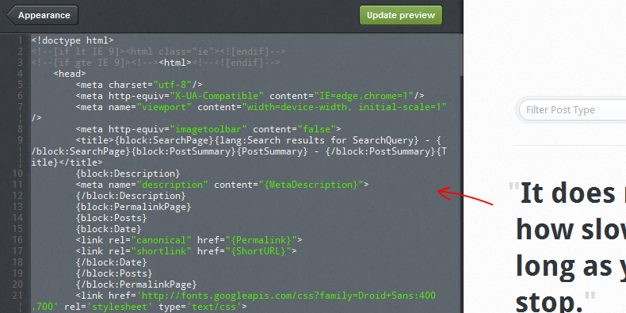
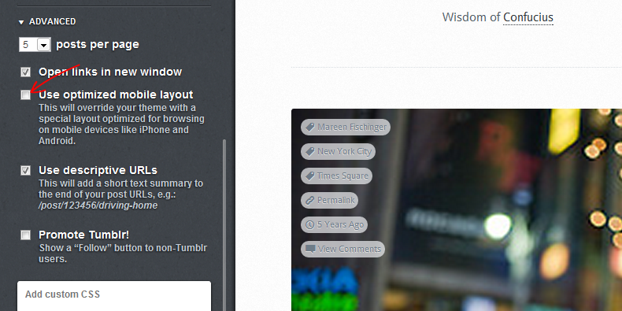
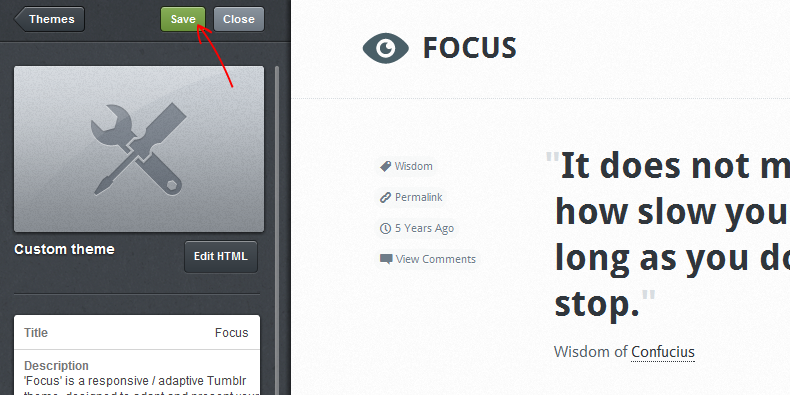
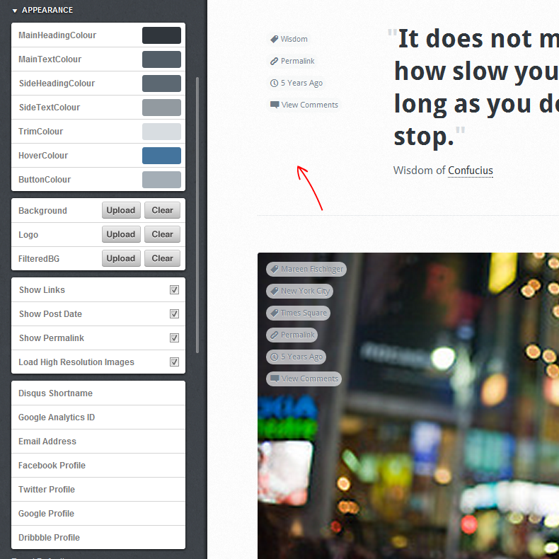

Created: 01/02/2012
By: mikedidthis
Email: email@mikedidthis.com
Thank you for purchasing my theme. If you have any questions that are beyond the scope of this help file, please feel free to email via my user page contact form here. Thanks so much!
Go to: www.tumblr.com/dashboard and log into your account.
Select "Customize Appearance" from the dashboard.
Select "Edit HTML" from the sidebar.
Copy the contents of the file supplied by ThemeForest (focus-tumblr-theme-mikedidthis.html) and paste this into the sidebar.
Once complete, click 'Update Preview'. Your preview should start to look like my theme.
Next click the 'Apperance' button, and you will be taken back to the main sidebar.
If you would like this theme to be dsiplayed when a mobile device (iPhone, Android etc) visits your site, you need to uncheck 'Use optimized mobile layout'.
Now click the 'Save' Button, and relax... You just installed the theme :)
It is worth refreshing your browser window (F5 or CMD + F5) to make sure the sidebar has loaded all the options for the theme.
Here you can change the theme colours, add your Disqus, Google Analytics and Twitter details etc. Now enjoy using your new theme!
This theme supports the following browsers / devices
This theme is a 'Responsive' theme, and the grid adapts depending on the screen size of the device viewing it. The theme has been tested all items marked above, but if you find an issue, please contact me, and I will happily help.
*Internet Explorer 8 is given a static view, and will not adapt its grid size due to the limitations of the browser.
This theme supports the following Tumblr post types
*Photosets are not currently supported due the the way Tumblr serves them. I am currently working on a solution, and will update the theme once its ready.
This theme also supports a 'Tag Menu'. For the tag menu to work, you need to 'tag' each post with what type it is. For instance, if the post is a Photo Post, then you will need to added the tag 'photo'. It will then appear when the posts are filtered by type (drop down menu).
This theme uses a frameless grid, which adds or removes columns to the layout depending on the screen size. Unlike a 'Fluid' theme, which uses 'percentages' for widths, all widths are calculated in 'ems'.
The 'breakpoints' on this theme are set by the content, and not by device. This way, the content doesn't look squished, or compressed, as you can experience with a fluid grid.
I openly encourage people to modify this theme, but do so with care. Altering the <body> font size will also alter the ENTIRE layout, as 'ems' use this value. I have included the uncompressed CSS in the installation folder, if you fancy making further changes to the theme. Copy and paste this into the <style></style> section
For further reading on 'ems':
This theme was designed 'mobile first'. This means all markup, resources and content is designed for mobile devices first, then enhanced as the device screen size increases.
I added some 'client-side' javascript to server a higher resolution image to the theme, as the screen width increases. Currently the theme has all images set to 250px. This makes sure that your mobile visitors are only downloading the resources they need. If the screen size is large than 300px the next available resolution image is then served and so on, up to 1280px (Desktop).
Also, the 'Twitter' & 'Dribbble' javascript is only served to devices with a screen width wider than 725px. This saves mobile users having to download content that they don't need.
All other 'social' items are only served, if the 'username' is included in the dashboard.
I hope the above makes sense, please, if you need any help, get in touch!
Firstly, thank you so much for purchasing this theme. As I said at the beginning, I'd be glad to help you if you have any questions relating to this theme. No guarantees, but I'll do my best to assist. If you have a more general question relating to the themes on ThemeForest, you might consider visiting the forums and asking your question in the "Item Discussion" section.
The theme wouldn't be possible without the following assests / people:
Again, thank you for purchasing my theme, your support means more than you know! If you do run into any trouble, please let me know, and I will be more than happy to help
Thanks - mikedidthis